품질경영기사 (2018-09-15 기출문제)
1과목: 실험계획법
1. L27(313)형 직교배열표에서 인자 A, B 요인이 4열과 9열에 배치되어 있다. A×B는 어느열에 배치해야 하는가?
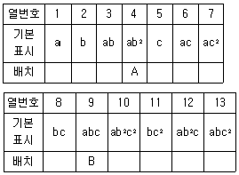
- 7열
- 7열. 11열
- 11열
- 10열, 13열
(정답률: 79%)

2. yiㆍ은 i번째 처리 수준에서 측정값의 합을 나타낸다. 다음 중 대비(contrast)가 아닌 것은?
- c=y1ㆍ+y3ㆍ -y4ㆍ, -y5ㆍ
- c=4y1ㆍ -3y3ㆍ+y4ㆍ-y5ㆍ
- c=3y1ㆍ+y2ㆍ-2y3ㆍ-2y4ㆍ
- c=-y1ㆍ+4y2ㆍ-y3ㆍ-y4ㆍ-y5ㆍ
(정답률: 82%)
3. 변량요인에 대한 설명으로 틀린 것은?
- 주효과의 기댓값은 0이다.
- 주효과는 고정된 상수이다.
- 수준이 기술적인 의미를 갖지 못한다.
- 주효과들의 합은 일반적으로 0이 아니다.
(정답률: 67%)
4. 어떤 분광석의 샘플링 방법을 결정하기 위하여 열차로부터 랜덤으로 3대의 화차를 택하고, 각 화차로부터 200g의 인크리멘트를 4개씩 샘플링하였다. 이 인크리멘트를 다시 축분하여 각각 2개씩의 분석시료를 얻어 3×4×2=24회의 실험을 랜덤덤화하여 자분실험계획을 실시하였다. 이 때 화차 수준내의 인크리멘트간 편차 제곱함의 자유도는?
- 6
- 8
- 9
- 23
(정답률: 48%)
5. 난괴법(randomized complete block designs)의 특징을 나타낸 것으로 맞는 것은?
- 처리별, 반복수를 똑같을 필요는 없다.
- 처리수, 블록수에 제한을 많이 받는다.
- 랜덤화와 블록화의 두 가지 원리에 따른 것이다.
- 실험구 배치는 난해하나 통계적 분석이 간단하다.
(정답률: 72%)
6. 4요인 A, B, C, D를 각각 4수준으로 잡고, 4×4 그레코 라틴방격으로 실험을 행했다. 분산분석표를 작성하고, 최적조건으로 A3B1D1을 구했다. A3B1D1에서 모평균의 점추정 값은 얼마인가? (단,
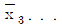
=12.50,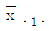
=11.50,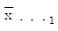
=10.00,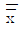
=15.94이다.)- 2.12
- 3.12
- 3.14
- 5.14
(정답률: 52%)
7. 다음은 Y펌프 축의 마모실험을 한 데이터이다. 망소특성에 대한 SN비는 약 얼마인가?
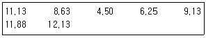
- -19.538dB
- -9.920dB
- 9.920dB
- 19.538dB
(정답률: 75%)
8. K 제품의 종합반응에서 흡수속도가 제조시간에 영향을 미치고 있다. 흡수속도에 대한 큰 요인이라고 생각되는 촉매량(Ai)을 2수준, 반응온도(Bi)를 2수준으로 하고, 반복 3회인 22형 실험을 한 데이터가 다음과 같을 때, B의 주효과는 얼마인가? (단, Tij은 A의 i번째, B의 J번째에서 측정된 특성치의 합이다.)
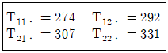
- 7
- 14
- 21
- 147
(정답률: 53%)
9. 수준 수 l=4, 반복 수 m=5인 1요인 실험에서 분산분석 결과 요인 A가 1%로 유의적이었다. ST=2.478. SA=1.690이고,
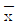
=7.72일 때, μ(A1를 α=0.01로 구간추정하면 약 얼마인가? (단, t0.90(16)=2.583, t0.995(16)=2.921이다.)(오류 신고가 접수된 문제입니다. 반드시 정답과 해설을 확인하시기 바랍니다.)- 7.396≤μ(A1)≤8.044
- 7.430≤μ(A1)≤8.010
- 7.433≤μ(A1)≤8.007
- 7.464≤μ(A1)≤7.976
(정답률: 70%)
10. 요인의 수준수가 5이고, 각 수준에서 반복수가 5인 1요인 실험으로 얻는 관측치를 정리하여 다음과 같은 값을 얻었다. 제곱함 SA의 값은 얼마인가? (문제 오류로 가답안 발표시 3번으로 발표되었지만 확정답안 발표시 모두 정답처리 되었습니다. 여기서는 가답안인 3번을 누르면 정답 처리 됩니다.)
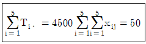
- 100
- 500
- 800
- 900
(정답률: 76%)
11. 다음 분산분석표로부터 모수요인 A, B에 대한 유의수준, 10%에서의 가설 검정 결과로 맞는 것은? (단, F0.90(2, 6)=3.46, F0.90(3, 2)=9.16, F0.90(3, 6)=3.29, F 0.90=(6, 11)=2.39이다.)
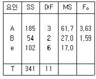
- F0.90(3, 6)=3.29이므로 귀무가설(σA2=0)을 기각한다.
- F0.90(3, 2)=9.16이므로 귀무가설(σB2=0)을 기각한다.
- F0.90(6, 11)=2.39이므로 귀무가설(σB2=0)을 기각한다.
- F0.90(2, 6)=3.46이므로 귀무가설(σA2=0)을 기각한다.
(정답률: 66%)
12. 다음 표는 요인 A를 4수준, 요인 B를 3수준으로 하여 반복 2회인 2요인 실험한 결과이다. 이에 대한 설명으로 틀린 것은? (단, 요인 A, B는 모두 모수요인이다.)
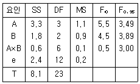
- 유의수준 5%로 요인 A와 B는 의미가 있다.
- 모평균의 점추정치는 요인 A, B가 유의하므로
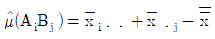
로 추정된다. - 교호작용 A×B는 유의수준 5^에서 유의하지 않으며, 1보다 작으므로 기술적 풀링을 검토할 수 있다.
- 교호작용을 오차항과 풀링할 경우 오차분산은 교호작용 A×B와 오차랑 e의 분산의 평균 즉 0.15가 된다.
(정답률: 72%)
13. Ls(s7)인 직교배열표에서 7이 의미하는 것은?
- 실험의 회수
- 요인의 수준수
- 직교배열표 행의 수
- 배치 가능한 요인의 수
(정답률: 75%)
14. I=ABCDE=ABC=DE의 별명 관계 중 틀린 것은?
- A=BCDE=BC=ADE
- B=ACDE=AC=BDE
- C=ABDE=AB=CDE
- D=BCE=BCD=AE
(정답률: 81%)
15. 25형의 1/4실시 실험에서 이중교락을 시켜 블록과 ABCDE, ABC, DE를 교락시켰다. AD와 별명관계가 아닌 것은?
- AB
- AE
- BCE
- BCD
(정답률: 75%)
16. xijk=μ+ai+rk+e(1)ik+bj+(ab)ij+e(2)ijk인 구조를 갖는 단일분할법의 게산방법으로 틀린 것은?
- ve1=(l-1)(r-1)
- Se1=SAR-SA-SR
- Se2=SB×R+SA×B×R
- ve2=(l-1)(m-1)(r-1)
(정답률: 46%)
17. 동일한 제품을 생산하는 3대의 기계가 있다. 이들 간에 부적합품률에 차이가 있는가를 조사하기 위하여 적합품을 0, 부적합품을 1로 하는 계수치 데이터의 분산분석을 실시한 결과 아래와 같은 표를 얻었다. 오차항의 자유도 ve를 구하면?
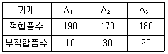
- 2
- 3
- 597
- 599
(정답률: 78%)
18. 데이터 분석 시 발생한 결측치의 처리방법으로 틀린 것은?
- 1요인 실험인 경우 결측치를 무시하고 그대로 분석한다.
- 될 수 있으면 한번 더 실험하여 결측치를 매우는 것이 가장 좋다.
- 반복 없는 2요인 실험인 경우 Yates의 방법으로 결측치를 추정하여 대체시킨다.
- 반복 있는 2요인 실험인 경우 결측치가 들어 있는 조합에서의 나머지 데이터들 중 최대 값으로 결측치를 대체시킨다.
(정답률: 58%)
19. 표본 자료를 희귀직선에 적합시킨 경우, 적합성의 정도를 판단하는 방법이 아닌 것은?
- 분산분석을 하여 판단한다.
- 결정계수(r2)를 구하여 판단한다.
- 추정 회귀식의 절편을 구하여 판단한다.
- 오차의 추정치(MSe)를 구하여 판단한다.
(정답률: 47%)
20. 반복 없는 3요인 실험에서 A, B, C가 모두 모수이고, 주효과가 교호작용 A×B, A×C, B×C가 모두 유의할 때
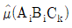
의 값은?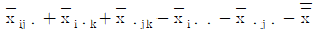
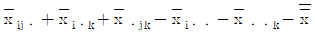
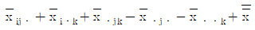
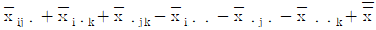
(정답률: 76%)
2과목: 통계적품질관리
21. 슈하트 관리도에서 점의 배열과 관련하여 이상원인에 의한 변동의 판정 규칙에 해당되지 않는 것은? (문제 오류로 가답안 발표시 2번으로 발표되었지만 확정답안 발표시 2, 4번이 정답처리 되었습니다. 여기서는 가답안인 3번을 누르면 정답 처리 됩니다.)
- 15개의 점이 중심선의 위아래에서 연속적으로 1σ 이내의 범위에 있는 경우
- 6개의 점이 연속적으로 중심선의 양쪽에 오르내리고 있으며, 중심선 ~1σ의 범위에는 없는 경우
- 3개의 점 중에서 2개의 점이 중심선의 한쪽에서 연속적으로 2σ~3σ의 범위에 있거나 벗어나 있는 경우
- 5개의 점 중에서 4개의 점이 중심선의 한쪽에서 연속적으로 1σ~2σ의 범위에 있거나 벗어나 있는 경우
(정답률: 31%)
22. 군의 크기 n=4의
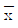
-R 관리도에서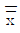
=18.50,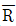
=3.09인 관리상태이다. 지금 공정평균이 15.50으로 변경되었다면, 본래의 3σ 한계로부터 벗어날 확률은? (단, n=4일 때, d2=2.⑤9이다.)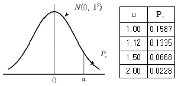
- 0.1587
- 0.1335
- 0.8665
- 0.8413
(정답률: 30%)
23. 2개 회사의 제품을 각각 로트로부터 랜덤하게 뽑아 인장강도를 측정하여 다음의 데이터를 구했다. 두 회사 제품의 평균치 차에 대한 검정 결과로 맞는 것은? (단, σS=3kg/mm2, σQ=5kg/mm2, u0.975=1.96, u0.995=2.576이다.)
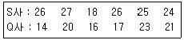
- 유의수준 1%, 5%에서 모두 두 회사 제품의 평균치의 차이가 없다.
- 유의수준 1%에서 두 회사 제품의 평균치에 차이가 있다고 할 수 있다.
- 유의수준 5%에서는 두 회사 제품의 평균치의 차이가 없으나, 유의수준 1%에서는 차이가 있다고 할 수 있다.
- 유의수준 1%에서는 두 회사 제품의 평균치의 차이가 없으나, 유의수준 5%에서는 차이가 있다고 할 수 있다.
(정답률: 52%)
24. 만성적으로 존재하는 것이 아니고 산발적으로 발생하여 품질변동을 일으키는 원인으로 현재의 기술수준으로 통제 가능한 원인을 뜻하는 용어는?
- 우연원인
- 이상원인
- 불가피원인
- 억제할 수 없는 원인
(정답률: 78%)
25. 100개의 표본에서 구한 데이터로부터 두 변수의 상관계수를 구하니 0.8이었다. 모상관계수가 0이 아니라면, 모상관계수와 기준치와의 상이검정을 위하여 z변환하면, z의 값은 약 얼마인가? (단, 두 변수 x, y는 모두 정규분포에 따른다.)
- -1.099
- -0.8
- 0.8
- 1.099
(정답률: 40%)
26. 빨간 공이 3개, 하얀 공이 5개 들어있는 주머니에서 임의로 2개의 공을 꺼냈을 때, 2개 모두 하얀 공일 확률은 얼마인가?
- 3/14
- 9/28
- 5/14
- 11/28
(정답률: 75%)
27. 계수형 샘플링 검사 절차-제1부:로트별 합격품질한계(AQL) 지표형 샘플링검사 방식(KS Q ISO 2859-1:2014)에서 검사수준에 관한 설명 중 틀린 것은?
- 검사수준은 소관권자가 결정한다.
- 상대적인 검사량을 결정하는 것이다.
- 통상적으로 검사수준은 Ⅱ를 사용한다.
- 수준 I은 큰 판별력이 필요한 경우에 사용한다.
(정답률: 64%)
28. c관리도에서 평균 부적합수
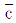
=9일 때, 3σ관리한계 LCL및 UCL은 각각 얼마인가?- LCL=0, UCL=18
- LCL=3, UCL=15
- LCL=6, UCL=12
- LCL=고려하지 않음, UCL=21
(정답률: 74%)
29. 확률변수의 확률분포에 관한 설명으로 틀린 것은?
- t분포를 하는 확률변수를 제곱한 확률변수는 F분포를 한다.
- 정규분포를 하는 확률변수를 제곱한 확률변수는 F분포를 한다.
- 정규분포를 하는 서로 독립된 n개의 확률변수의 합은 정규분포를 한다.
- 푸아송분포를 하는 서로 독립된 n개의 확률변수의 합은 푸아송분포를 한다.
(정답률: 65%)
30. 타이어 제조 회사에서 생산 중인 타이어의 수명시간은 평균이 37000km이고, 표준편차는 5000km인 것으로 알려져 있다. 타이어의 수명을 증가시키는 공정을 개발하고 시제품을 100개 생산하여 조사한 결과 평균 수명이 38000km이었다. 타이어 수명시간의 표준편차가 5000kg로 유지된다고 할 때, 유의수준 5%로 평균수명이 증가하였는지 검정할 때의 설명으로 틀린 것은?
- 기각치는 1.96이다.
- 검정통계량값은 2.0이다.
- 대립가설(H1)은 μ＞37000이다.
- 검정결과로 귀무가설(H0)을 기각한다.
(정답률: 48%)
31. 계수 및 게량 규준형 1회 샘플링 검사(KS Q 0001:2013)에서 계량 규준형 1회 샘플링 검사에 대한 설명으로 맞는 것은?
- 로트의 표준편차를 알고 있는 경우의 시료 크기가 모르는 경우에 비하여 훨씬 크다.
- 로트의 표준편차를 모르는 경우
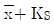
의 분산을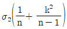
으로 보고 근사계산한다. 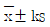
에 의하여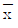
가 계산되는데 여기서 K의 값은 로트의 표준편차를 알고 있는 경우, K값보다 작으므로 유리하다.- 실제 적용에 있어서 로트의 표준편차를 미리 정확히 알고 있다고 말할 수 없기 때문에, 검사초기에는 표준편차를 모르는 경우를 사용하면 좋다.
(정답률: 47%)
32. 로트의 형성에 있어 원료별 기계별로 특징이 확실한 모수적 원인으로 로트를 구분하는 것은?
- 층별
- 군별
- 해석
- 군구분
(정답률: 61%)
33. 합리적인 군으로 나눌 수 있는 경우, X관리도의 관리한계(UCL, LCL)의 표현으로 맞는 것은?
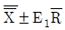
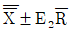
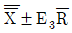
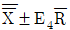
(정답률: 56%)
34. 계수 규준형 샘플링 검사특성(OC) 곡선의 계산방법에 대한 설명 내용으로 맞는 것은?
- 로트의 크기 N에 관계없이 시료의 크기 n이 작으면 푸아송분포에 의거하여 계산한다.
- 로트의 크기 N이 시료의 크기 n에 비하여 그다지 크지 않을 경우에 정규분포로 계산한다.
- 로트의 크기 N이 시료의 크기 n에 비하여 충분히 큰 경우에는 이항분포에 의거하여 계산한다.
- 로트의 크기 N이 크고, 시료의 크기 n과 로트의 부적합품률 P가 매우 작은 경우에는 이항분포로 근사계산을 한다.
(정답률: 44%)
35. 계수치 축차 샘플링 검사방식(KS Q ISO 8422:2006)에서 100 아이템당 부적합수 검사를 하는 경우, 1회 샘플링 검사의 샘플크기를 11개로 이미 알고 있다. 이 떄 중지 시 누적샘플크기(중지값)은 얼마인가?
- 16개
- 17개
- 19개
- 21개
(정답률: 50%)
36. 한국인과 일본인의 스포츠(축구, 농구, 야구) 선호도가 같은지 조사하였다. 각각 100명씩 랜덤추출하여 가장 좋아하는 한 가지 운동을 선택하여 분류하였더니 다음 표와 같을 때, 설명 중 틀린 것은? (단, α=0.⑤, X20.95(2)=5.991이다.)
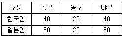
- 검정결과는 귀무가설 채택이다.
- 검정통계량(X20)은 약 2.5397이다.)
- 검정에 사용되는 자유도는 4이다.
- 기대도수는 각 스포츠별로 선호도가 같다고 가정하여 평균을 사ㅑ용한다.
(정답률: 65%)
37. ‘통계적으로 유의하다’라는 표현에 관한 설명으로 가장 적절한 것은?
- 통계량이 모수와 같은 값임을 의미한다.
- 통계적 해석을 하는데 있어서 귀무가설이 옳음을 의미한다.
- 검정에 이용되는 통계량이 기각역에 들어간다는 것을 의미한다.
- 검정이나 추정을 하는데 있어서 기초가 되는 데이터의 측정시스템이 매우 신뢰할 수 있음을 의미한다.
(정답률: 67%)
38. 모집단 비율(P)에 대하여 100(1-α)% 양측 신뢰구간의 폭을 2.4이상 되지 않게 추정하기 위한 표본크기(n)를 결정할 때의 식으로 맞는 것은?
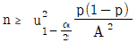
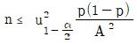
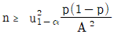
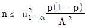
(정답률: 48%)
39. A와 B는 독립사상이며, P(A)=0.3, P(B)=0.6이라고 할 때, P(Ac∩Bc)는 얼마인가?
- 0.22
- 0.24
- 0.28
- 0.36
(정답률: 71%)
40. 계수형 및 계량형 샘플링검사에 대한 설명으로 적합하지 않은 것은?
- 일반적으로 계수형 검사와 계량형 검사에서 시료의 크기는 비슷하다.
- 일반적으로 계량형 검사는 계수형 검사보다 정밀한 측정기가 요구된다.
- 검사의 설계, 방법 및 기록은 계량형 검사가 계수형 검사보다 일반적으로 더 복잡하다.
- 단위 물품의 검사에 소요되는 시간은 계수형 검사가 계량형 검사보다 일반적으로 더 작다.
(정답률: 61%)
3과목: 생산시스템
41. 총괄생산계획(APP)이 전략 중 생산율, 즉 생산성을 주요의 변동에 대응시키는 전략에서 고려되는 비용은?
- 잔업수당
- 재고 유지비
- 해고비용, 퇴직수당
- 납기지연으로 인한 손실
(정답률: 49%)
42. 공급자가 복수일 경우와 비교하여 단일 공급자인 경우의 장점이 아닌 것은?
- 품질 균일
- 규모의 경제 실현
- 신제품 개발 협력이 용이
- 문제 발생 시 공급자 교체 가능
(정답률: 74%)
43. 어느 프레스공장에서 프레스 10대의 가동상태가 정지율 25%로 추정되고 있다. 이 때 워크샘플링법에 의해서 신뢰도 95% 상대오차 ±10%로 조사하고자 할 때 샘플의 크기는 약 몇 회인가?
- 72회
- 96회
- 1152회
- 1536회
(정답률: 40%)
44. 3월의 수요예측값이 500개이고, 실제판매량이 540개일 때, 4월의 수요예측값은? (단, 지수평활계수 σ=0.2로 한다.)
- 484개
- 496개
- 508개
- 520개
(정답률: 71%)
45. 공정도에 사용되는 기호와 이에 대한 설명으로 맞는 것은?
- ○:정보를 주고받을 때나 계산을 하거나 계획을 수립할 때에는 제외된다.
- □:완성단계로 한 단계 접근시킨 것으로 작업을 위한 사전준비작업도 포함된다.
- D:공식적인 어떤 형태에 의해서만 저장된 물건을 움직이게 할 수 있을 때를 의미한다.
- ⇨:작업대상물의 이동으로 검사 또는 가공 도중에 작업자에 의해서 작업장소에서 발생되는 경우는 사용하지 않는다.
(정답률: 57%)
46. 다음은 생산관리에서 휠 라이트에 의해 제시된 생산과업의 우선순위 평가기준이다. 단계별 순서로 맞는 것은?
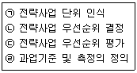
- ㉠→㉣→㉡→㉢
- ㉡→㉢→㉠→㉣
- ㉢→㉠→㉣→㉡
- ㉣→㉠→㉡→㉢
(정답률: 47%)
47. 하루 8시간 근무시간 중 일반여유시간으로 100분이 설정되었다면 여유율은 약 몇 %인가? (문제 오류로 가답안 발표시 2번으로 발표되었지만 확정답안 발표시 1, 2번이 정답처리 되었습니다. 여기서는 가답안인 2번을 누르면 정답 처리 됩니다.)
- 20.8%
- 26.3%
- 35.7%
- 39.4%
(정답률: 51%)
48. 노동력, 설비, 물자, 공간 등의 생산자원을 누가, 언제, 어디서, 무엇을, 얼마나 사용할 것인가를 결정하는 작업계획으로 주ㆍ일ㆍ시간 단위별 계획을 수립하는 것은?
- 공정계획
- 생산계획
- 작업계획
- 일정계획
(정답률: 65%)
49. 공정별(기능별) 배치의 내용으로 맞는 것은?
- 흐름생산 방식이다.
- 범용설비를 이용한다.
- 제품중심의 설비배치이다.
- 소품종 대량생산방식에 적합하다.
(정답률: 65%)
50. MRP의 주요 기능으로 볼 수 없는 것은?
- 재고수준 통제
- 우선순위 통제
- 생산능력 통제
- 작업순위 통제
(정답률: 34%)
51. 품종별 한계이익을 산출하고, 이를 고정비와 대비하여 손익분기점을 구하는 방식을 무엇이라고 하는가?
- 개별법
- 기준법
- 절충법
- 평균법
(정답률: 53%)
52. 생산설비배치 형태를 GT 배치에 적용하였을 때, 생산성의 이점에 해당하지 않는 것은?
- 원활한 자재흐름
- 준비시간의 감소
- 작업공간의 확대
- 재공품 재고의 감소
(정답률: 54%)
53. 공급업체로부터 파견된 직원이 구매기업의 공장에 상추하면서 적정 재고량이 유지되고 있는지를 관리하는 시스템은 무엇인가?
- ERP 시스템
- MRP 시스템
- JIT 시스템
- JIT-Ⅱ 시스템
(정답률: 58%)
54. PTS(Predeterrminrd Time Standard) 기법의 특징으로 틀린 것은?
- 작업자수행도평가(Performance rating)가 필요 없다.
- 전문적인 교육을 받는 전문가가 아니면 활용이 어렵다.
- 시간연구법에 비해 작업방법을 개선할 수 있는 기회가 적다.
- 작업동작은 한정된 종류의 기본요소동작으로 구성된다는 가정을 전제로 한다.
(정답률: 47%)
55. 설비종합효율을 저해시키는 로스와 효율관리 지표와의 관계를 설명한 것으로 가장 적절한 것은?
- 고정로스와 초기로스는 성능가동율을 떨어지게 한다.
- 일시정지로스와 속도저하로스는 성능가동율을 떨어지게 한다.
- 불량-수정로스와 초기-수율로스는 시간 가동율을 떨어지게 한다.
- 고장로스와 작업준비-조정로스는 양품을(적합품을)을 떨어지게 한다.
(정답률: 53%)
56. 시스템(System)의 개념과 관련되는 주요 내용들을 시스템의 특성 내지 속성으로 나타내는데 시스템의 기본 속성이 아닌 것은?
- 관련성
- 목적추구성
- 기능성
- 환경적응성
(정답률: 51%)
57. 고정주문량 모형의 특징을 설명한 것으로 맞는 것은?
- 주문량은 물론 주문과 주문 사이의 주기도 일정하다.
- 최대재고수준은 조달기간 동안의 수요량의 변동 때문에 언제나 일정한 것은 아니다.
- 재고수준이 재주문점에 도달하면 주문하기 때문에 재고수준을 계속 실사할 필요는 없다.
- 하나의 공급자로부터 상이한 수많은 품목을 구입하는 경우에 수량할인을 받기 위해 적용하면 유리하다.
(정답률: 47%)
58. 설비보전 조직의 기본유형에 해당하지 않는 것은?
- 분산보전
- 절충보전
- 지역보전
- 집중보전
(정답률: 50%)
59. 단속생산의 특징에 해당하는 것은?
- 계획생산
- 다품종소량생산
- 특수목적용 전용설비
- 수요예측에 따른 마케팅 활동 전개
(정답률: 48%)
60. 단일기계로 n개의 작업을 처리할 경우의 일정계획에 관한 설명으로 틀린 것은?
- 평균 납기 지체일을 최소화하기 위해서는 존슨의 규칙을 사용한다.
- 긴급률(critical ratio)이 작은 순으로 배정하면 대체로 평균 납기 지체일을 줄일 수 있다.
- 최대 납기 기체일을 최소화하기 위해서는 납기일이 빠른 순으로 작업순서를 결정한다.
- 평균흐름시간(averge flow time)을 최소화하기 위해서는 최단작업시간 우선법칙을 사용한다.
(정답률: 50%)
4과목: 신뢰성관리
61. 신뢰성 샘플링 검사에서 MTBF와 같은 수명 데이터를 기초로 로트의 합무판정을 결정하는 것은?
- 계수형 샘플링검사
- 계량형 샘플링검사
- 층별형 샘플링검사
- 선별형 샘플링검사
(정답률: 57%)
62. 신뢰성 설계에 대한 설명으로 틀린 것은?
- 설계품질을 목표품질이라고도 부른다.
- 시스템의 품질은 설계에 의해 많이 좌우된다.
- 설계품질에는 설계 및 기능, 신뢰성 및 보전성, 안정성이 포함된다.
- 설계단계에서 설계품질이 떨어지더라도 제조단계에서 약간만 노력하면 좋은 품질시스템을 만들 수 있다.
(정답률: 62%)
63. 수명분포가 지수분포인 부품 n개를 t0시간에서 정시중단시허을 하였다. t0시간 동안 고장수는 r개이고 고장품을 교체하지 않는 경우 각각의 고장시간이 t1, ㆍㆍㆍ, tr이라면, 고장률 λ에 대한 추정치는?
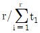
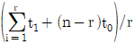
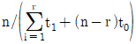
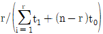
(정답률: 54%)
64. 샘플 200개에 대한 수명시험 데이터이다. 500~1000 관측시간에서의 경험적(empirical)고장률(λ(t))은 얼미인가?
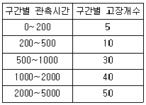
- 1.50×10-4/h
- 1.62×10-4/h
- 3.24×10-4/h
- 4.44×10-4/h
(정답률: 45%)
65. 고장시간 데이터가 와이블분포를 따르는지 알아보기 위해 사용하는 와이블확률지에 대한 설명 중 틀린 것은?
- 관측 중단된 데이터는 사용할 수 없다.
- 고장분포가 지수분포일 때도 사용할 수 있다.
- 분포의 모수들을 확률지로부터 구할 수 있다.
- t를 고정시간, F(t)를 누적분포함수라고 할 때 lnt와 lnln
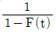
과의 직선관계를 이용한 것이다.
(정답률: 52%)
66. 부품에 가해지는 부하(x)는 평균 25000. 표준편차 4272인 정규분포를 따르며, 부품의 강도(y)는 평균 50000이다. 신뢰도 0.999가 요구될 때 부품강도의 표준편차는 약 얼마인가? (단, P(u＞-3.1)=0.999이다.)
- 3600
- 6840
- 7860
- 9800
(정답률: 55%)
67. 고장밀도함수가 지수분포를 따를 때, MTBF 시점에서 신뢰도의 값은?
- e-1
- e-2t
- e-3t
- e-λt
(정답률: 40%)
68. 제품이 고장 나기 전까지 제품의 평균수명을 의미하는 용어는?
- MDT
- MTBF
- MTTR
- MTTF
(정답률: 46%)
69. 수명분포가 평균이 300, 표준편차가 30인 정규분포를 따르는 제품이 있다. 이미 300시간을 사용한 이 제품이 앞으로 30시간 더 작동할 신뢰도는 약 얼마인가? (단, u0.8413=1, u0.95=1.645, u0.975=1.96, u0.9777=2이다.)
- 4.56%
- 15.87%
- 31.74%
- 50.00%
(정답률: 30%)
70. 8개의 테니스 라켓에 대한 신뢰성 시험에서 모두 고장이 발생했다. 6번째 고장에 대한 중앙순위(Median Rank)법을 사용했을 때, 신뢰성의 누적고장확률 값은 얼마인가?
- 60%
- 64%
- 68%
- 75%
(정답률: 58%)
71. 고장률이 λ인 지수분포를 따르는 N개의 부품을 T시간 사용할 때 C건의 고장이 발생하는 확률은 어떤 분포로부터 구할 수 있는가? (단, N은 굉장히 크다고 한다.)
- 지수분포
- 푸아송분포
- 베르누이분포
- 와이블분포
(정답률: 51%)
72. 두 개의 부품 A와 B로 구성된 대기 시스템이 있다. 두 부품이 평균고장률이 λ4=0.02., λB=0.3인 지수분포를 따른다면, 50시간까지 시스템이 작동할 확률은 약 얼마인가? (단, 스위치의 작동확률은 1.00으로 가정한다.)
- 0.264
- 0.343
- 0.657
- 0.736
(정답률: 19%)
73. 정상전압 220V의 콘덴서 10개를 가속전압 260V에서 3개가 고장날 때까지 가속수명시험을 하였더니 63, 112, 280시간에 각각 1개씩 고장났다. 가속계수값이 2.31인 경우 σ(알파)승법칙을 사용하여 정상전압에서의 평균 수명시간을 구하면 약 얼마인가?
- 557.87
- 1610.56
- 1859.55
- 3679.55
(정답률: 44%)
74. 그림의 신뢰성 블록도에 맞는 FT(Fault Tree:고장목)도는?
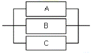
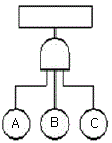
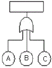
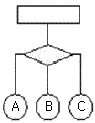
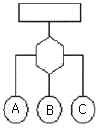
(정답률: 56%)
75. Y시스템의 고장률이 시간당 0.0⑤라고 한다. 가용도가 0.990 이상이 되기 위해서는 평균수리 시간은 약 얼마인가?
- 0.4957 시간
- 0.9954 시간
- 2.0202 시간
- 2.5252 시간
(정답률: 44%)
76. 욕조형(bath-tub) 고장률 곡선에서 디버깅(debugging), 번인(bum-in) 등의 방법을 통해 나쁜 품질의 부품들을 걸러내야 할 필요성이 있는 시기는?
- 초기 고장기
- 우발 고장기
- 중간 고장기
- 마모 고장기
(정답률: 65%)
77. 동일한 신뢰도를 갖는 2개의 부품으로 병렬 구성되어 있는 장비의 목표신뢰도가 0.95가 되려면 각 부품의 신뢰도는 약 얼마인가?
- 0.⑤00
- 0.2236
- 0.7764
- 0.9025
(정답률: 58%)
78. 주어진 조건에서 규정된 기간에 보전을 완료할 수 있는 성질을 보전성이라 하고, 그 확률을 보전도라 정의한다. 이 때 주어진 조건에 포함되지 않아도 되는 사항은?
- 보전성의 설계
- 보전자의 자질
- 보전예방과 사후보전
- 설비 및 예비품의 정비
(정답률: 29%)
79. 부품의 신뢰도가 각각 0.85, 0.90, 0.95인 3개의 부품으로 구성된 직렬시스템이 있다. 이 시스템의 신뢰도를 향상시키고자 할 때, 특별한 제한조건이 없는 경우 시스템의 신뢰도에 가장 민감한 부품은?
- 신뢰도가 0.85인 부품
- 신뢰도가 0.90인 부품
- 신리도가 0.95인 부품
- 3개 부품 모두 동일하다.
(정답률: 56%)
80. 아이템의 모든 서브 아이템에 존재할 수 있는 결함 모드에 대한 조사와 다른 서브 아이템 및 아이템의 요구 기능에 대한 각 결함 모드의 영향을 확인하는 정성적 신뢰성 분석 방법은?
- FTA
- FMEA
- FMECA
- Fail safe
(정답률: 54%)
5과목: 품질경영
81. 샌더스(T.R.B. Sanders)가 제시한 현대적인 표준화의 목적으로 가장 거리가 먼 것은?
- 무역의 벽 제거
- 안전, 건강 및 생명의 보호
- 다품종 소량생산 체계의 구축
- 소비자 및 공동사회의 이익 보호
(정답률: 52%)
82. 품질경영시스템-요구사항(KS Q ISO 9001:2015)에서 사용되지 않는 용어는?
- 적용 제외
- 문서화된 정보
- 외부공급자
- 제품 및 서비스
(정답률: 49%)
83. 제조공정에 관한 사내표준화의 요건으로 볼 수 없는 것은?
- 사내표준은 실행 가능한 것이어야 한다.
- 장기적인 방침 및 체계하에 추진되어야 한다.
- 사내표준의 내용은 구체적이고 객관적으로 규정되어야 한다.
- 사내표준 대상은 공정변화에 대해 기여비율이 작은 것부터 시도한다.
(정답률: 59%)
84. 서비스의 개념과 특징에 대한 설명으로 틀린 것은?
- 물리적 기능은 서비스도 사전에 검사되고 시험되어야 한다는 측면에서 측정 가능하고 재현성이 있는 사항에 대한 형이상학적 기능을 의미한다.
- 물리적 기능과 정서적 기능은 서비스 산업에서 서비스를 구성하는 2대 기능으로 대개는 서비스 산업의 업종에 따라 두 기능의 비중이 다르다.
- 전기, 가스, 수도, 운수, 통신 등의 업종은 물리적 기능의 비중이 높고, 음식점과 호텔등의 업종은 물리적 기능과 정서적 기능의 비율이 분산되어 있다.
- 정서적 기능은 물리적 기능에 부가해서 고객에게 정서, 안심감, 신뢰감 등 정신적 기쁨의 감정을 불러일으키는 기분이나 분위기를 주는 움직임을 의미한다.
(정답률: 54%)
85. 품질보증의 의의로 가장 적합한 것은?
- 품질이 규격한계에 있는지 조사하는 것이다.
- 품질특성을 조사하여 합ㆍ부 판정을 내리는 것이다.
- 검사를 중심으로 안정된 품질을 확보하는 것이다.
- 품질이 고객의 요구수준에 있음을 보증하는 것이다.
(정답률: 62%)
86. 게하니(Gehani) 교수가 구상한 품질가치사슬 구조로 볼 때 최고 정점에 있다고 본 전략종합품질에 대한 품질선구자의 사상에 해당하는 것은?
- 고객만족품질과 시장품질
- 설계종합품질과 원가종합품질
- 전사적종합품질과 예방종합품질
- 시장창조종합품질과 시장경쟁종합품질
(정답률: 48%)
87. 히스토그램의 작성 목적으로 가장 관계가 먼 것은?
- 공정능력을 파악하기 위해
- 데이터의 흩어진 모양을 알기 위해
- 불량대책 및 개선효과를 확인하기 위해
- 규격치와 비교하여 공정의 현황을 파악하기 위해
(정답률: 38%)
88. 품질코스트의 종류에 들지 않는 것은?
- 예방코스트
- 평가코스트
- 실패코스트
- 구입코스트
(정답률: 69%)
89. 품질관련 소집단활동의 유형으로 볼 수 있는 것은?
- 품질분임조활동
- 경영혁신활동
- 품질위원회활동
- 품질전략위원회
(정답률: 56%)
90. 허츠버그(Frederick Herzberg)의 동기부여-위생이론에서 만족(동기)요인에 해당되지 않는 것은?
- 인정
- 임금, 지위
- 직무상의 성취
- 성장, 자기실현
(정답률: 62%)
91. 품질경영시스템-요구사항(KS Q ISO 9001 : 2015)에서 정의한 품질경영원칙이 아닌 것은?
- 고객중시
- 리스크기반 사고
- 인원의 적극참여
- 증거기반 의사결정
(정답률: 51%)
92. S 공정에서 50개의 측정치에 의하여 품질의 표준편차 σ=8.25를 얻었다. 규격상한이 70이고, 규격하한이 30인 경우, 이 공정의 공정능력지수(Cp)를 구하면 약 얼마인가?
- 0.11
- 0.47
- 0.81
- 1.31
(정답률: 59%)
93. 공차(Tolerance)에 대한 설명 내용으로 틀린 것은?
- 공차란 품질특성의 총 허용변동을 의미한다.
- 허용공차란 요구되는 정밀도를 규정하는 것이다.
- 공차란 최대허용치수와 최소허용치수와의 차이를 의미한다.
- 공차는 공정 데이터로부터 구한 표준편차의 2배로 정하는 것이 일반적이다.
(정답률: 47%)
94. 시험 장소의 표준 상태(KS A 0006 : 2014)에 정의된 상온, 상습의 기준으로 맞는 것은?
- 온도 : 0~20℃, 습도 : 60~70%
- 온도 : 5~35℃, 습도 : 45~85℃
- 온도 : 5~35℃, 습도 : 63~67℃
- 온도 : 15~35℃, 습도 : 30~70℃
(정답률: 54%)
95. 기업에서 측정 목적에 의한 분류 즁 관리를 목적으로 분석ㆍ평가하는 측정활동으로 보기에 가장 거리가 먼 것은?
- 환경조건의 측정
- 제조설비의 측정
- 시험ㆍ연구의 측정
- 자재ㆍ에너지의 측정
(정답률: 55%)
96. 제조물 책임(PL)에 대한 설명으로 틀린 것은?
- 기업의 경우 PL법 시행으로 제조원가가 올라갈 수 있다.
- 제품에 결함이 있을 때 소비자는 제품을 품질을 신뢰할 수 없다.
- 제조물 책임법(PL법)의 적용으로 소비자는 모든 제품의 품질을 신뢰할 수 있다.
- 제품엔 결함이 없어야 하지만, 만약 제품에 결함이 있으면 생산, 유통, 판매 등의 일련의 과정에 관여한 자가 변상해야 한다.
(정답률: 43%)
97. 신 QC 7가지 기법 중 장래의 문제나 미지의 문제에 대해 수집한 정보를 상호 친화성에 의해 정리하고, 해결해야 할 문제를 명확히 하는 방법은?
- KJ 법
- 계통도법
- PDPC법
- 연관도법
(정답률: 52%)
98. TQC의 3가지 기능별 관리에 해당되지 않는 것은?
- 자재관리
- 일정관리
- 품질보증
- 원가관리
(정답률: 33%)
99. 4개의 PCB 제품에서 각 제품마다 10개를 측정했을 때, 부적합수가 각각 2개, 1개, 3개, 2개가 나왔다. 이 때 6시그마 척도인 DPMO(Defects per Million Opportunities)는?
- 0.2
- 2.0
- 200000
- 800000
(정답률: 46%)
100. 품질비용으로 볼 수 없는 것은?
- 교육훈련비
- 직접 노무비
- 스크랩비용
- 검사기기의 보수비
(정답률: 53%)